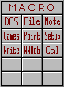

| My-T-Soft®: for Windows; Indestructible Keyboards and Indispensable Utilities; Version 1.80; User's Guide | ||
|---|---|---|
| Prev | Chapter 3. My-T-Soft Panels | Next |

The purpose of the Macro Panel is to give you the capability of defining your own buttons to launch programs, open other Macro Panels, or create keystroke combinations.
In My-T-Soft, a Macro is a sequence of keystrokes or actions tied to a button. The Macro is initiated by selecting the button.
The main Macro Panel provided has options preprogrammed to show you the vast capabilities of this panel. For more information see the User's Guide, or see My-T-Soft Setup Help (How to create Macros).
Several Example Macro Panels have also been provided. Macro Panels have the ability to Auto-Open when the appropriate application becomes the active window. The Auto-Open feature will only operate if the Macro Panel is open on My-T-Soft, and the My-T-Soft window is not minimized.